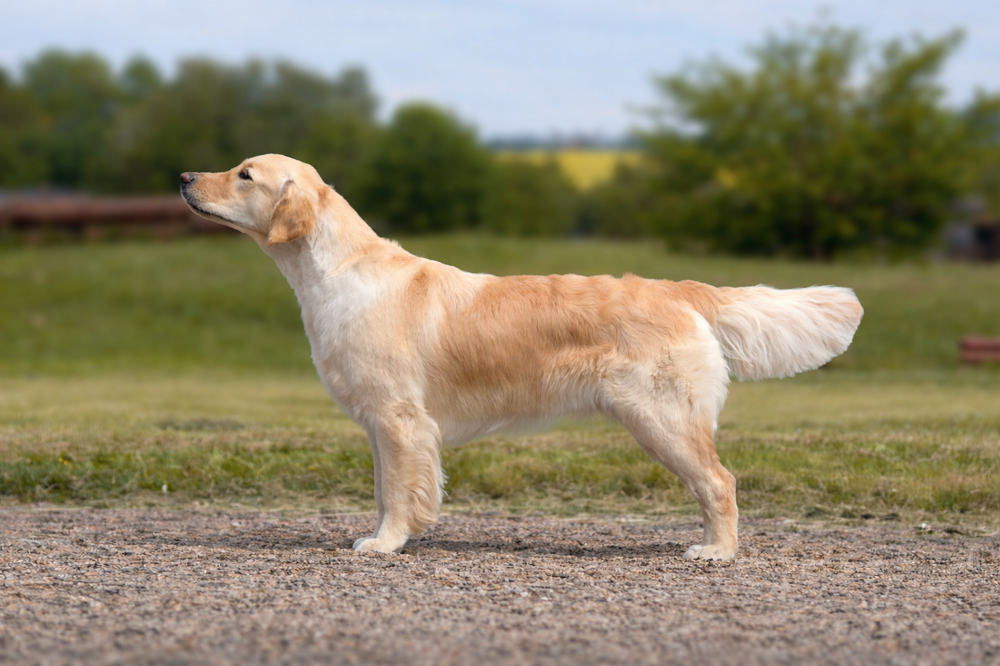

images/alma-profile.jpg).
Alma Bohemica Aurum
Alminka je naše vysněná fenečka zlatého retrívra. Do života k nám vtrhla jako velká voda a velmi rychle se z ní stal pes do každé situace – parťák na výlety, dovolené, sport i klidné večery doma.
Zdraví
Výška 56 cm, chrup úplný nůžkový. Oči GR-PRA1 N/N, DR-PRA2 N/N, PRA N/N. ICT N/P, ICT-2 N/N, NCL N/N, GRMD Xn/Xn. HD B, ED 0/0, OCD negativní, SA negativní, LTV 0.
Ocenění a zkoušky
Třída štěňat: VN1, Jubilejní vítěz štěně. Třída dorostu: VN1, VN2. Třída mladých: 2× VD, 2× V, V2. Zkoušky: OVVR – 232 b., plný počet.
Do budoucna bychom Almě rádi dopřáli několik vrhů štěňat, která ponesou její laskavou povahu, pracovní chuť a radost ze života dál.